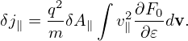
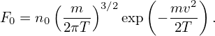
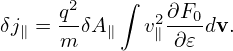
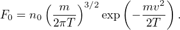

Γ0 defined in Eq. (209) can be approximated by the Pade approximation as
|
| (211) |
The comparison between the exact value of Γ0 and the above Pade approximation is shown in Fig. 1.

Using the Pade approximation (211), the polarization density np in expression (210) can be written as
(Padé approximate is the “best” approximation of a function by a rational function of given order – under this technique, the approximant’s power series agrees with the power series of the function it is approximating.)In the long wavelength limit, k⊥ρ ≪ 1, expression (212) can be further approximated as
Then the corresponding term in the Poisson equation is written as where ŒªD is the Debye length deÔ¨Åned by ŒªD2 = TùúÄ0∕(n0q2). For typical tokamak plasmas, the thermal ion gyroradius œÅi is much larger than ŒªD. Therefore the term in expression (214) for ions is much larger than the space charge term ∇2Œ¥Œ¶ ‚â°‚àá‚ä•2Œ¥Œ¶ + ‚àá‚à•2Œ¥Œ¶ ‚âà‚àá‚ä•2Œ¥Œ¶ in the Poisson equation. Therefore the space charge term can be neglected in the long wavelength limit.Equation (214) also shows that electron polarization density is smaller than the ion polarization density by a factor of œÅe‚àïœÅi ‚âà 1∕60. Note that this conclusion is drawn in the long wavelength limit. For short wavelength, the electron polarization and ion polarization density can be of similar magnitude (to be discussed later).
The polarization density expression (213) is for the long wavelength limit, which partially neglects FLR effect. Let us go back to the more general expression (212). The Poisson equation is written
 | (215) |
Write δni = npi + δni′, where δnpi is the ion polarization density, then the above expression is written
 | (216) |
Fourier transforming in space, the above equation is written
 | (217) |
where  pi is the Fourier transformation (in space) of the polarization density npi and similar meanings
for δ
pi is the Fourier transformation (in space) of the polarization density npi and similar meanings
for δ , δi′, and δe. Expression (212) implies that
, δi′, and δe. Expression (212) implies that  pi is given by
pi is given by
|
| (218) |
Using this, equation (217) is written
 | (219) |
Multiplying both sides by (1 + k⊥2œÅi2)‚àïùúÄ0, the above equation is written
|
| (220) |
Next, transforming the above equation back to the real space, we obtain
 | (221) |
Neglecting the Debye shielding term, the above equation is written
 | (222) |
which is the equation actually solved in many gyrokinetic codes, where ŒªDi2 = ùúÄ0Ti∕(qi2ni0).